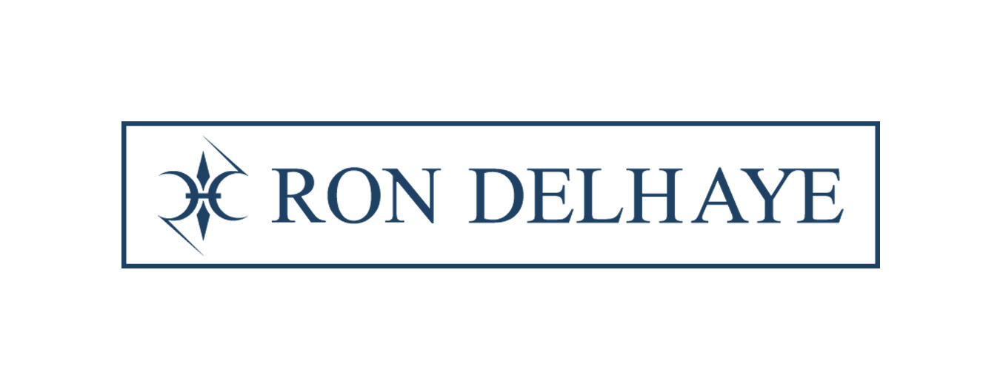
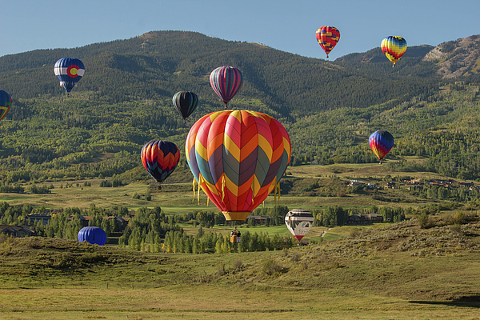

On-screen preview — this page prints as the newsletter (⌘P / Print).

From Aspen and Beyond
The Golden Hour
Saturday, September 26 – Saturday, October 3, 2026
Music, art, and high-country happenings — a handful of picks chosen for the days you're here.
SaturdaySeptember 26

Snowmass Balloon Festival — Morning Launch
Saturday, September 26 · 7:00 AM – 9:00 AM · Snowmass Town Park, Snowmass Village · Free · All ages
Thirty-plus balloons lift off over the Elk Mountains at sunrise for the festival's 51st year. Mornings are cold at this altitude — layers, closed-toe shoes, and a blanket or chairs; dogs aren't allowed on the field.
The single most photogenic morning of the week; worth the early alarm.
Saturday, September 26 · 9:00 AM – 2:00 PM · Downtown Aspen (Galena & Hopkins) · Free · All ages
The town's weekly market runs 9 to 2 with Colorado-grown produce, local meats, and artisan goods — strictly Colorado-made, no brokers. Arrive before 10 for the easiest browsing and the shortest coffee line.
A gentle first morning — daylight, low-barrier, and an easy taste of the town.
Saturday, September 26 · 12:00 PM – 8:00 PM · Snowmass Base Village · Free entry; food & drink for purchase · All ages (21+ to drink)
Snowmass caps its summer season with steins, pretzels, a sausage-eating contest, stein-holding, live music, and the return of Manuela, the Oktoberfest Queen. Lederhosen encouraged; the festival itself is open to all ages.
An easy, festive afternoon after the morning balloons — no tickets needed.
Saturday, September 26 · 8:00 PM · Belly Up Aspen, 450 S Galena St · From $38.40 · All ages (<18 with parent/guardian)
M.C. Taylor brings his literate, gospel-tinged Americana to Aspen's intimate 450-cap room, with Lou Hazel opening on the I'm People Tour. Doors 7 PM, show 8 PM. All ages (under 18 with a parent or guardian).
For the music-first guest — one of the fall's finest songwriters in the valley's best listening room.
Sunday, September 27 · 7:00 AM – 9:00 AM · Snowmass Town Park, Snowmass Village · Free · All ages
The last morning of the festival's 51st year — the final mass ascension over Snowmass Town Park. Same drill: layers, blankets, arrive early; balloons go up weather permitting.
Your second chance if Saturday's weather didn't cooperate.
Sunday, September 27 · 10:00 AM · Downtown Aspen (Wheeler Opera House, Library, Community Church) · Free GA; Wheeler main stage $45 · All ages
The festival's second year closes with a full day of author conversations, panels, and signings across downtown — Jennette McCurdy, Richard Russo, Veronica Roth, and more on the lineup. Most events are free with registration; marquee Wheeler main-stage sessions are ticketed.
For readers — the cultural high point of the weekend, and mostly free.
Sunday, September 27 · 5:00 PM · Participating restaurants, Aspen · Prix fixe (varies by restaurant) · All ages
The last evening of the autumn edition — prix fixe, multi-course fall-harvest menus at 25+ local restaurants, from Matsuhisa to Wild Fig. Reserve ahead; menus and the full restaurant list are at the Chamber.
The week's best-value fine dining — book the table tonight, it ends Sunday.
Sunday, September 27 · 8:00 PM · Belly Up Aspen, 450 S Galena St · From $12.00 · All ages (<18 with parent/guardian)
Saskatoon-bred Bombargo bring their big-chorus pop-rock to the Belly Up room, with Graham Good & The Painters opening. Doors 7 PM, show 8 PM. All ages (under 18 with a parent or guardian).
A high-energy night out for the group that wants to dance.
Monday, September 28 · 8:00 AM · Maroon Bells Scenic Area (shuttle from Aspen Highlands) · Shuttle $16/adult · All ages
Late September is the peak window for the gold — the most photographed peaks in North America at their most golden. Between 8am and 5pm all visitors must use the shuttle from Aspen Highlands; reserve ahead, it sells out in color season.
The can't-miss of the week for anyone who hasn't seen the Bells in fall.
Monday, September 28 · 10:00 AM · Aspen Art Museum, 637 E Hyman Ave · Free · All ages
Free, always. This fall: Adrián Villar Rojas's monumental 'First Gods, Lost Animals,' Arch Connelly's 'Straighten Your Wig and Pray' (through Oct 11), and Anthea Hamilton's 'Cauliflower Sundial' — plus the rooftop for the view.
A quiet, contemplative morning — and the rooftop view is worth the trip alone.
Tuesday, September 29 · 5:00 PM · Isis Theatre, 406 E Hopkins Ave · All ages
Six days of international and independent film — features and docs from Cannes, Sundance, Telluride, and Venice — opens at the Isis. Tickets on sale now; the full program is at aspenfilm.org.
The week's best indoor evening — festival energy without the ski-season crowds.
Tuesday, September 29 · 8:00 PM · Belly Up Aspen, 450 S Galena St · From $45.60 · All ages (<18 with parent/guardian)
Jason Singer's Michigander brings earnest, heartland indie-rock to the Belly Up stage, with Jake Lemond opening. Doors 7 PM, show 8 PM. All ages (under 18 with a parent or guardian).
For the indie-rock fan — intimate room, big choruses.
Wednesday, September 30 · 10:00 AM · Various venues, Aspen & Snowmass · Varies by event · All ages
The annual tribute week opens — concerts of Denver's songbook at the Wheeler and the Snowmass Chapel, plus nightly sing-alongs of 'Rocky Mountain High' and 'Country Roads.' Each event is run by its own organizer; the full schedule is on the celebration site.
Peak fall color meets the valley's most heartfelt tradition — made for the sing-along crowd.
Thursday, October 1 · 7:00 PM · Wheeler Opera House, 320 E Hyman Ave · All ages
A foundational figure of the '60s folk revival, with his distinctive guitar work and songs by Joni Mitchell, James Taylor, and Jackson Browne in his repertoire. An intimate acoustic evening in the 1889 opera house — the room is half the experience.
For the folk traditionalist — a master in the perfect room.
Mack Bailey & Chris Nole: The Songs of John Denver (Wheeler)
Friday, October 2 · 7:30 PM · Wheeler Opera House, 320 E Hyman Ave · All ages
'Poems, Prayers & Promises' — an intimate concert of John Denver's songbook, part of the week's Celebration. Warmth, honesty, and the songs the whole valley knows by heart.
The Celebration's centerpiece concert — book ahead.
Saturday, October 3 · 9:00 AM – 2:00 PM · Downtown Aspen (Galena & Hopkins) · Free · All ages
The last market of the 2026 season — fall produce, apple cider, pumpkins, and the final roundup of Colorado artisans. Arrive early; the send-off crowds come out for this one.
Bookend the week where it started — one last stroll before checkout.
Saturday, October 3 · 10:30 AM – 3:00 PM · Main Street & Sopris Park, Carbondale · Free (food for purchase) · All ages
Carbondale's harvest tradition since 1909 — parade down Main Street, community BBQ, farm market, and kids' activities in Sopris Park, 30 minutes down-valley. The pancake breakfast starts at 8 if you're early.
Small-town Colorado at its most charming — an easy morning drive before departure.